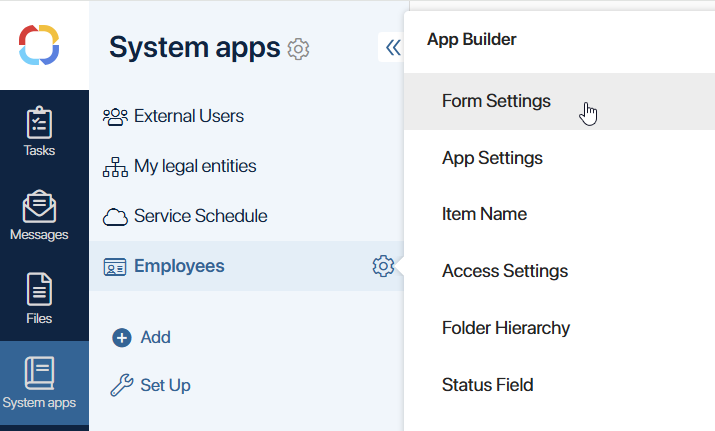
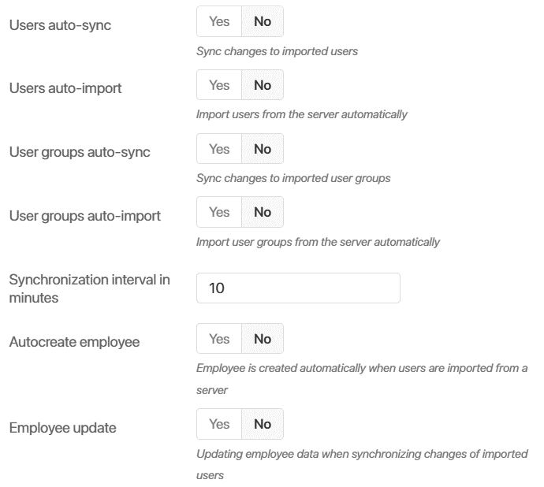
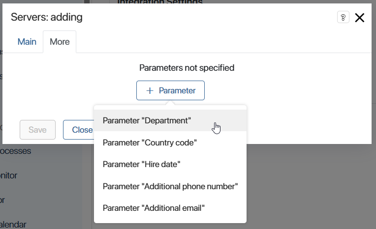
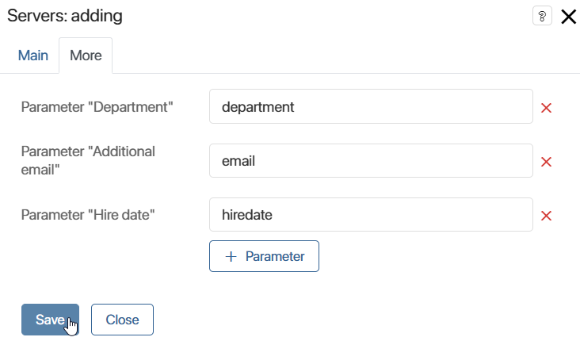

The Employees system app stores additional information about users: position, department, contact information, etc. You can configure synchronization of information about employees with Active Directory/LDAP. This allows you to ensure that the data in the system is up-to-date.
Configure update of information about employees in two steps:
- In the Employees app, create fields to store data from AD/LDAP.
- In the AD/LDAP integration module, enable employee updates and map app fields to user attributes.
Step 1: Create fields in the Employees app
To add fields for recording information from AD/LDAP:
- Go to System apps and open the Employees app.
- Click the gear icon next to the app name and select Form Settings.

- String. Records texts. If you pass from AD/LDAP a value of another type, such as a number, it will be converted to a string.
- Number. Records a numeric value. You can also send a string to the field, which is converted to a number, for example, a phone number.
- Yes/No switch. Records a Yes or No value. For example, whether the user account is locked. Values from AD/LDAP are passed in number format, where 1 = Yes, 0 = No, so the field can also be associated with a numeric attribute. Its value must be 0 or 1.
- Date/Time. Displays the date and time.
Read more about customizing forms in the App item form article.
- Click Save.
Step 2: Customize the integration module and map properties
Fields are mapped separately for each AD/LDAP server. To configure the data transfer to the Employee app, do the following:
- Go to Administration > Modules and open the Active Directory or LDAP integration module page.
- Click the server name to go to its settings.
- On the Main tab, enable the Users auto-sync option and set the synchronization frequency.
- Enable the Employee update option to update the data in the Employees app during synchronization.

- Go to the More tab, click + Parameter, and select the Employees app field. It will be added to the list for matching.

- Open Active Directory/LDAP and navigate to the list of user attributes. Copy the code of the attribute whose value you want to record to the Employees app.
Please note, the attribute's data type must be suitable for recording to the field. Otherwise, the information will not display in the directory. - In BRIX, paste the attribute code next to the field.

- Add all the mapped properties to the list.
- Save the server settings.
Now when you import or synchronize internal users from AD/LDAP, the data in the Employees app will be updated.
If you delete the mapping string in the module settings, the data in the Employees app will not be cleared. The field will display the last recorded value.
When the value of an attribute mapped to the Employees app field changes in AD/LDAP, the Data does not match status is set for the user in BRIX. After synchronization with the server, the status changes back to Imported.
Found a typo? Select it and press Ctrl+Enter to send us feedback